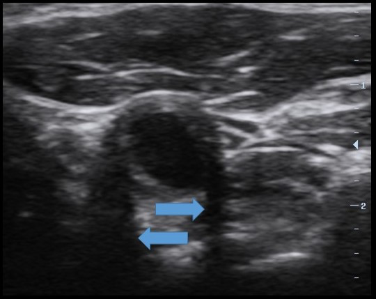

Question 1
Front
What 2D artifact is demonstrated on the image?
Choices

Answer: A. edge shadowing/defocusing
Feedback:
Caused by a reduction of reflection echoes by diffraction of the sound waves that touch the margin of a round boundary. Commonly seen in transverse views of blood vessels.
Caused by a reduction of reflection echoes by diffraction of the sound waves that touch the margin of a round boundary. Commonly seen in transverse views of blood vessels.
Research & Study Guide
Question Type
Core review concept
Core Idea
Caused by a reduction of reflection echoes by diffraction of the sound waves that touch the margin of a round boundary.
What To Remember
Commonly seen in transverse views of blood vessels.
Focus Terms
Self-Check
- Can I explain in one sentence why A. edge shadowing/defocusing is right?
- What clue in the question makes this a core review concept problem?
- Could I define or recognize these terms without notes: artifact, demonstrated, image, edge?